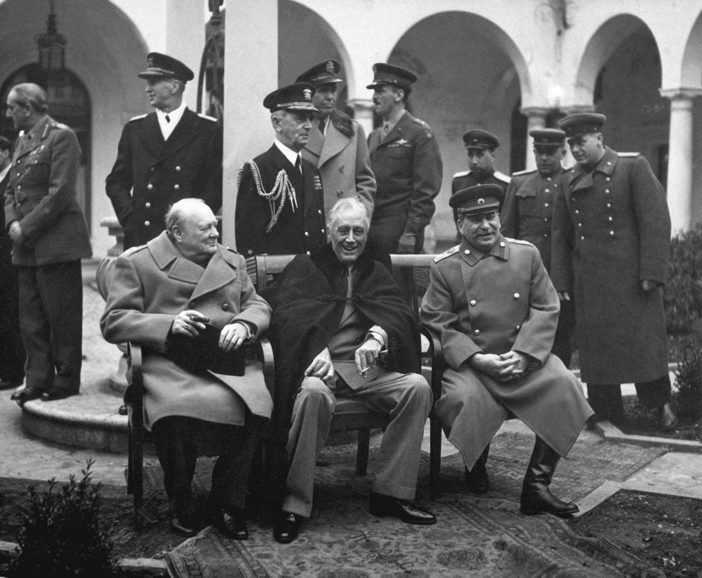
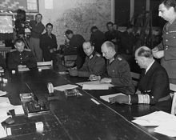
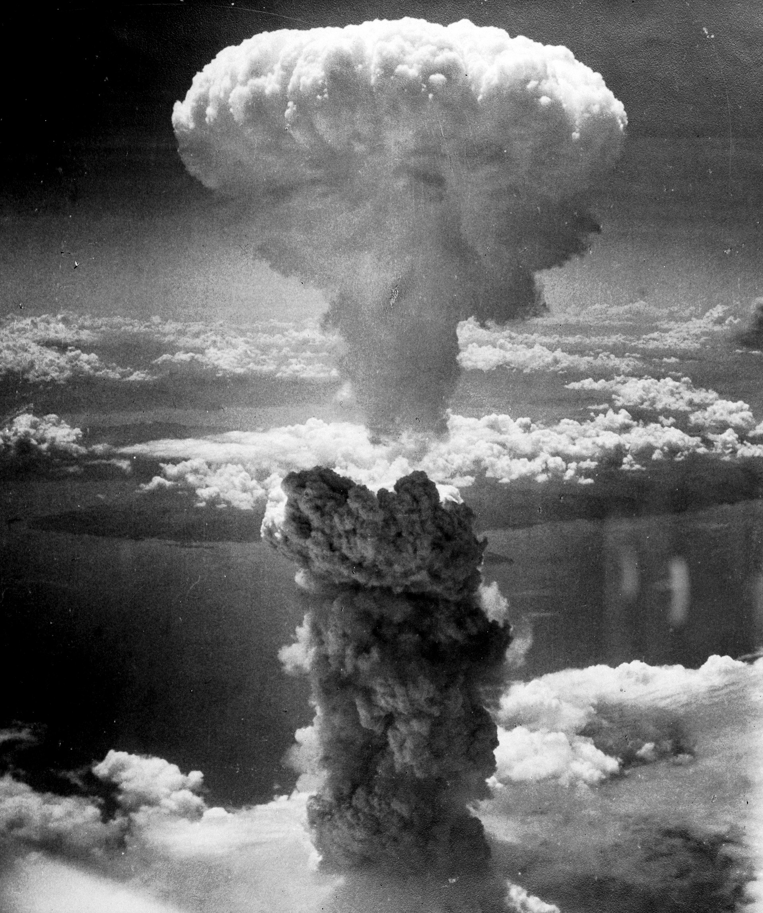

Duitsland wordt ingesloten
 Op 16 december 1944 deed Duitsland een laatste poging aan het westelijk front door de meeste van zijn resterende reserves te gebruiken om een grootschalig tegenoffensief in de Ardennen te lanceren en samen met de Frans-Duitse grens om de westelijke geallieerden te splitsen en grote delen van het westelijke gebied te omsingelen. Geallieerde troepen veroverden hun belangrijkste aanvoerhaven in Antwerpen om meer vooraden naar het leger aan het fron te brengen. In januari was het offensief afgeslagen zonder dat de strategische doelstellingen waren bereikt. In Italië bleven de westerse geallieerden in een patstelling aan de Duitse verdedigingslinie. Halverwege januari 1945 vielen de Sovjets en Polen Polen aan, drongen van de Vistula naar de rivier de Oder in Duitsland, en veroverden Oost-Pruisen. Op 4 februari kwamen Sovjet-, Britse en Amerikaanse leiders bijeen voor de Conferentie van Yalta. Ze waren het eens over de bezetting van het naoorlogse Duitsland en over wanneer de Sovjet-Unie zich zou aansluiten bij de oorlog tegen Japan. The Battle of the Bulge (1944-45)
Einde van de oorlog in Europa
 Op 30 April wordt Berlijn ingenomen door Russische en Poolse troepen. Op 12 april stierf president Roosevelt en werd opgevolgd door Harry S. Truman. Benito Mussolini werd op 28 april vermoord door Italiaanse partizanen. Twee dagen later pleegde Hitler zelfmoord in het belegerde Berlijn, en hij werd opgevolgd door grootadmiraal Karl Dönitz. De totale en onvoorwaardelijke overgave in Europa werd ondertekend op 7 en 8 mei, die eind 8 mei van kracht zou zijn. Het Duitse Legergroepcentrum verzette zich tot 11 mei in Praag. The Death of Mussolini 1945
Einde van de oorlog in Azie
 De oproep tot onvoorwaardelijke overgave werd afgewezen door de Japanse regering, die geloofde dat ze in staat zou zijn te onderhandelen over gunstigere voorwaarden voor overgave. Begin augustus lieten de Verenigde Staten atoombommen vallen op de Japanse steden Hiroshima en Nagasaki. Tussen de twee bombardementen door vielen de Sovjets, op grond van de overeenkomst van Yalta, het door Japan bezette Mantsjoerije binnen en versloeg snel het Kwantung-leger, dat de grootste Japanse strijdmacht was. Deze twee gebeurtenissen overtuigden de leiders van het keizerlijke leger om de voorwaarden van overgave te aanvaarden. Het Rode Leger veroverde ook het zuidelijke deel van het eiland Sakhalin en de Koerilen. Op 15 augustus 1945 gaf Japan zich over en de overleveringsdocumenten werden uiteindelijk op 2 september 1945 ondertekend in de Baai van Tokio op het dek van het Amerikaanse slagschip USS Missouri, waarmee een einde kwam aan de oorlog. The Atomic Bomb: Crash Course History of Science #33